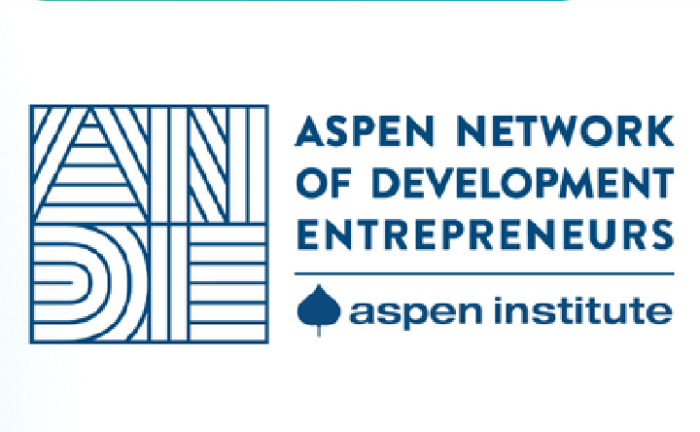
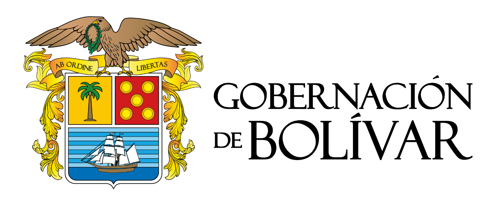
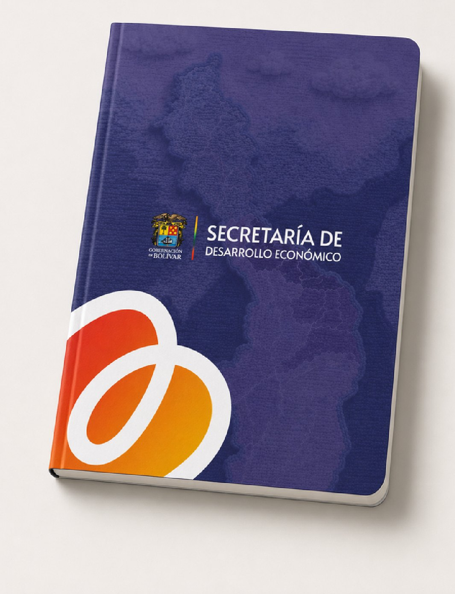
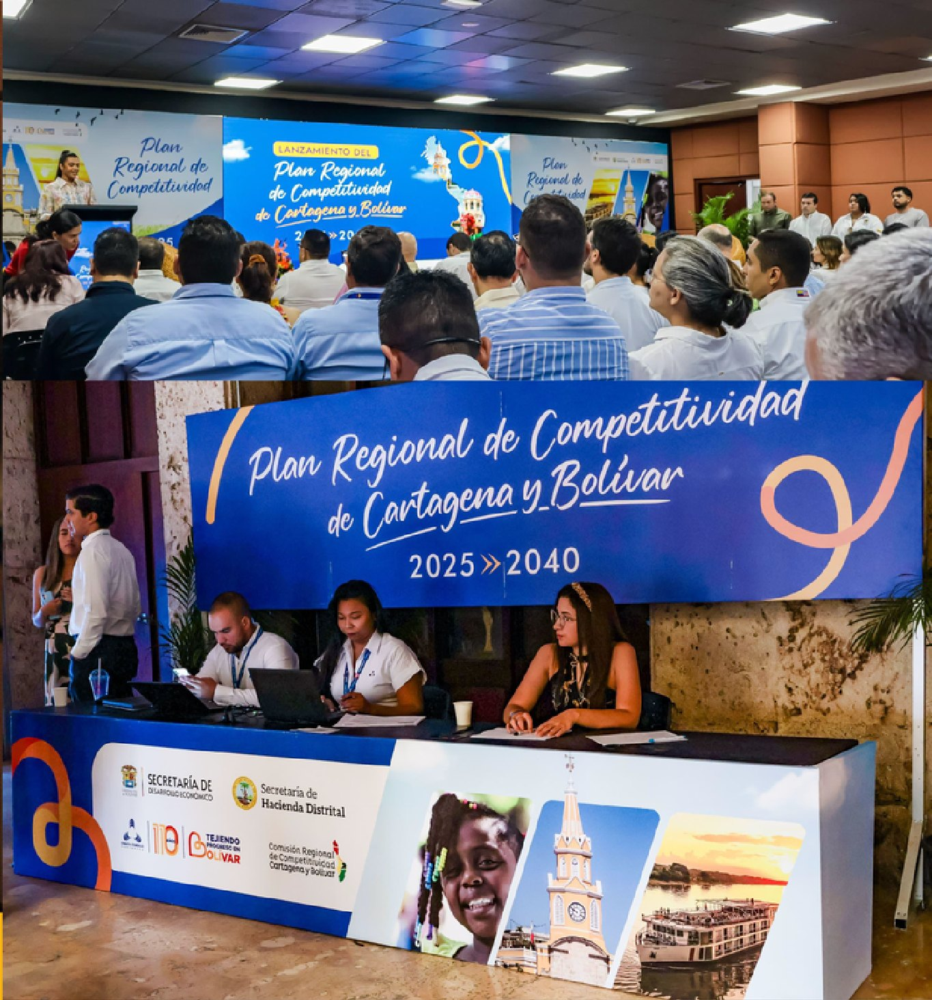
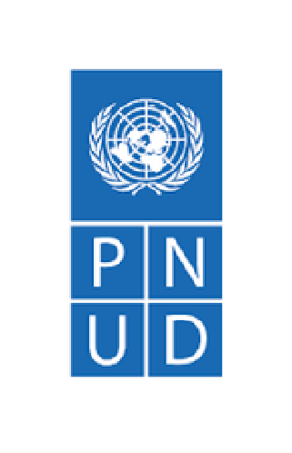
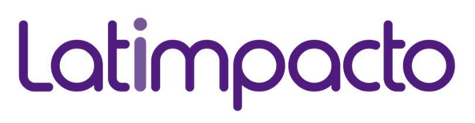
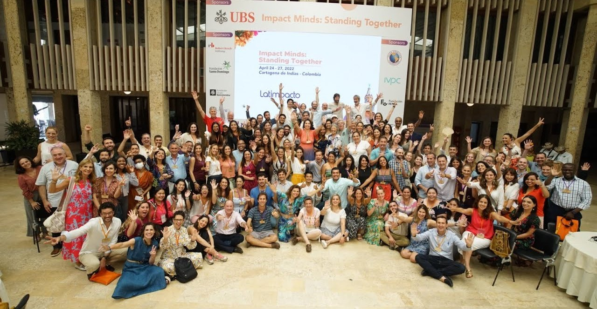
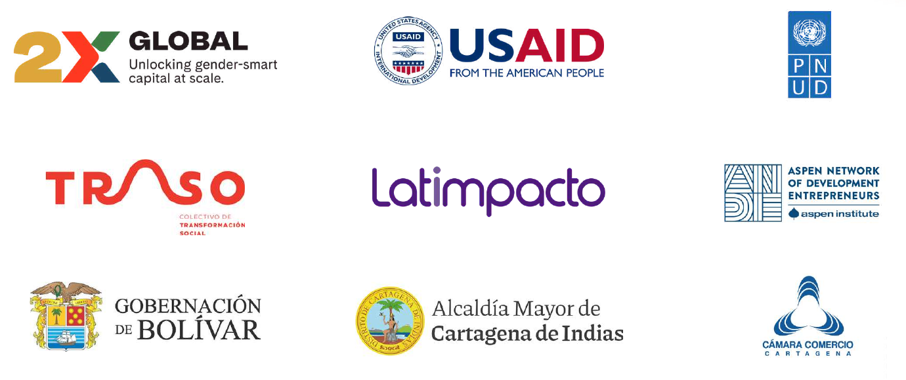

2X is much more than an annual report.
A global network moving capital toward women: the Challenge, Certification, Ignite, the Summit, and stories in every region. Every one of them needs to be explained, launched and remembered.
01 · Brain × 2X Global
Then came two Summits, a certification campaign, a business case, stories from the field and a booth in Latin America. Two years of work together taught both teams something.
Along the way
A global network moving capital toward women: the Challenge, Certification, Ignite, the Summit, and stories in every region. Every one of them needs to be explained, launched and remembered.
Strategy, campaigns, video, events and digital products, from one team that already knows your voice, your brand and your review process.
We’re your vendor, yes. But what we really want is to be your partner.Brain Studio, for 2X Global
whatever you need, there’s a space at Brain that can help
02 · Who we are
We are a Colombian 360° communication, creative and marketing agency. We bring strategy, content, design, technology and execution together around each organisation’s goals: more than 300 branding projects, 100 campaigns and 30 digital builds.
03 · What we do
We don’t treat communication as separate services. We connect strategy, creativity, content, technology and experiences around what each organisation needs to achieve.
Planning, campaigns, positioning, consulting, workshops, research and copywriting.
Social media, Meta Ads, Google Ads, content planning, analytics, optimisation and reporting.
Naming, visual identity, graphic systems, brand guidelines, editorial design and presentations.
Scripts, photography, video, drone, editing and live streaming.
Websites, landing pages, e-commerce, UX/UI, interactive experiences, platforms and dashboards.
Events, brand experiences, signage, merchandise, coverage and activation campaigns.
Digital
More than 30 digital builds for brands and organisations. A few you can visit right now:
WordPress site with an online textile shop for a community museum in Bolívar, Colombia.
museomampujan.org ↗ Agency · Puerto RicoWordPress redesign with 165 migrated articles, a 33-case portfolio and SEO safeguards.
mioagency.com ↗ Sustainability · ColombiaSite for a consultancy that turns sustainability into a profitable business decision.
aristeaconsultoria.com ↗ Education · CartagenaInstitutional site for a school in Manga, Cartagena.
colegiopablohoff.edu.co ↗ Foundation · CartagenaSite with online donations for its programmes with children and families.
unaluz.org ↗ This pageBuilt the same way we would build an experience for 2X: interactive, light, and made from approved content.
brainstudioagencia.com ↗04 · Case studies

The challenge
ANDE needed to show the results of its programmes across the region. In Colombia it also had to start building its reputation and reach local media.
sources: 2023 work agreement and ARISE 2024 press report
Before you see the result
For the ARISE workshop in Bogotá we set a goal: 20 media stories. What do you think happened?
What we achieved
source: ARISE press report, June 2024
What we did
Monthly content plans for the network’s LinkedIn, X and Instagram, plus institutional presentations.
The network’s video newscast: script, shoot and edit of its 2023 and 2024 editions.
Visual identity for Metrics Conference in Brazil and, for ARISE in Bogotá, press release, interviews, three days of coverage and video.
The work
Brain Studio has been key to our digital identity. A young, creative and committed team that brings our ideas to life.Lina Cano, Communications Coordinator · ANDE Latin America
What it means for 2X
An organisation gains weight when it shows up where its audience gets its news. With ANDE, a network just starting out in Colombia earned 21 stories in radio, print and digital media from a single event.
0 of 3 connected
Case 01 complete
Showing up where your audience gets its news is what we would do for 2X.


The challenge
The Secretariat wanted to be the reference for Bolívar’s economy, but its work wasn’t visible. Its channels were mostly third-party content. And every programme, from entrepreneurship to circular economy, had to sound like itself and still be the Government.
sources: communications strategy (Aug 2025) and April 2026 report
Before you see the result
In April 2026 the Secretariat’s content had 55,638 views on Instagram. The account had 467 followers. Who do you think watched?
source: Secretariat report, April 2026
What we achieved
Working together since April 2024. 11 consecutive monthly content plans, October 2025 to September 2026.
17 fairs, festivals and public days across the department with material in our archive
source: Secretariat monthly report, April 2026
What we did
A digital strategy for the Secretariat with a monthly plan, and a personal-brand strategy for the Secretary: original content instead of reposts, with measurable goals per channel.
A refreshed look and unified graphics. Identities for Bolívar en Cifras, Bolívar Circular and Distrito Circular that live alongside the Government brand.
Coverage and content at fairs, festivals and public days, from Mompox to Turbaco, so the work was seen where it happens.
The work
Each programme with its own face, all recognisable as the Government of Bolívar. Tap one to see it in full.
What it means for 2X
2X also speaks to very different audiences through many programmes, and needs to be recognised by people who don’t know it yet. That is what we did for Bolívar: reach far beyond its own community.
0 of 3 connected
Case 02 complete
Reaching beyond your own community is what we would do for 2X.

The challenge
The previous plan dated from 2008. The new one was built by more than 300 stakeholders, and all that technical work had to become something mayors, businesses and citizens would want to use.
sources: Plan presentation and launch schedule (July 2025)
Before you see the result
Cartagena and Bolívar needed a new Regional Competitiveness Plan. What year was the previous plan from?
source: Plan institutional presentation, 2025
300+ stakeholders · 7 subregional dialogues · 24+ interviews · 11 strategic pillars
In numbers
From the workshop to the stage. A public forum in October 2024, the Plan launch in July 2025 and Bolívar en Cifras in November 2025.
Tap each host town to light up the territory
0 of 7 lit
source: invitations, launch pieces and Plan presentation
What we did
The “Cartagena y Bolívar Más Competitivo” key visual, the Plan’s graphic line and the Bolívar en Cifras identity, chosen from five logo proposals.
Layout of the Plan for print and digital, covers, the institutional presentation and the Bolívar en Cifras 2025 report.
Invitations to workshops in the seven subregions and the 2024 forum; for the launch, backdrops, totems, a vertical reel and bumpers for each speaker.
The work
From the welcome banner to the panel screens. Tap one to see it in full.
What it means for 2X
2X explains complex criteria and research, and presents them to investors, partners and media. With the Plan we did both: a technical document people understand and a launch people see.
0 of 3 connected
Case 03 complete
Putting technical work on stage is what we would do for 2X.


The challenge
100% of Cartagena’s beaches were at risk of erosion, and the works to protect them would change daily life for fishers and beach vendors. People had to be informed before, during and after, in Spanish and English, and the community had to be heard.
sources: communications strategy (Nov 2021) and final agreement report (2023)
Before you see the result
The strategy explained the coastal protection works on Facebook, Instagram and WhatsApp. How many people do you think it reached?
source: UNGRD–UNDP final agreement report, 2023
What we achieved
Digital marketing workshops. 35 beach vendors (October 2022) and 30 fishers from FEDECARYBOL (March 2023) learned to sell through social media and WhatsApp.
90+ people at the co-creative mural and beach clean-up in June 2023, with these partners
source: UNGRD–UNDP final agreement report, 2023
What we did
A Facebook page, Instagram @proteccioncostera.social, WhatsApp Business and a virtual office, to inform people and take their questions.
40 videos, 178 posts, 55 information pieces and 30 press releases, plus a radio spot.
7,500 flyers in Spanish and English, digital marketing workshops for vendors and fishers, and a co-creative mural with a beach clean-up.
The work
Pieces telling the project and the progress of community compensation. Tap one to see it in full.
What it means for 2X
Trust depends on people understanding what is happening and what is being done for them. With UNDP we communicated exactly that: a risk, a works project and the compensation for those affected.
0 of 3 connected
Case 04 complete
Explaining sensitive topics clearly is what we would do for 2X.


The challenge
Position the Impact Minds event and Latimpacto as the reference for social and environmental impact in Latin America. That meant launching an Instagram account from scratch and covering the event live on four networks.
sources: communications strategy (April 2022) and 2022 activity plan
Before you see the result
In May 2022, the Instagram account we launched for Latimpacto had 359 followers. How much do you think it grew in two months?
source: digital platforms KPI sheet, 2022
What we achieved
Impact Minds: Standing Together, Cartagena 2022. 353 participants from 26 countries and more than 190 organisations at the event we communicated before, during and after.
5 attending organisations whose testimonials we published after the event
source: digital platforms KPI sheet, 2022
What we did
We launched Latimpacto’s Instagram days before the event, with a countdown, a teaser reel shot in Cartagena, an agenda piece and a social map of 43 speakers to amplify the conversation.
After the event: a recap video, a memories video, 13 brand photographs, attendee testimonials, a thread on the TED-style talks, sponsor thank-yous and the updated event page. Then, the promotion of the 2023 edition in Brazil.
Community management on Instagram, Facebook, X, LinkedIn and YouTube, with paid media in October; a website with blogs in Spanish, English and Portuguese; email marketing and a newsletter per language.
The work
Impact Minds 2022 and 2023, plus pieces for social, launches and the Latimpacto website. Tap one to see it in full.
Brain Studio was key to consolidating our digital ecosystem and marketing strategy. We value their commitment and dedication.Carolina Suárez, CEO · Latimpacto
What it means for 2X
Latimpacto speaks to the same world as 2X: funds, foundations and family offices. We opened a channel from zero and grew it in weeks, around a live event and a newsletter people actually open.
0 of 3 connected
Case 05 complete
Opening channels people actually follow is what we would do for 2X.
06 · One example from lane C
A published report that people enter by role. Two paths, three approved insights and one clear next step: the full report.
what we’d measure: path chosen, clicks to the report, journeys completed
Start with the perspective that matches your work.
Investors see first how the findings can open a conversation with their investees.
Final wording and figures come from the published report, once 2X validates them.
Every path ends on the official publication, so the source stays with 2X.
07 · Next step
Twelve ideas, grouped by the three ways of working. We don’t need all of them. Pick the one that matters most for 2X right now.
08 · Who trusts us
International cooperation, public sector, trade groups, foundations and companies in more than 30 sectors, in Colombia and ten other countries.

Let’s talk
Tell us which priority comes first and we’ll come back with a scope for that pilot.
Jump to any chapter. Your progress is saved in this browser.